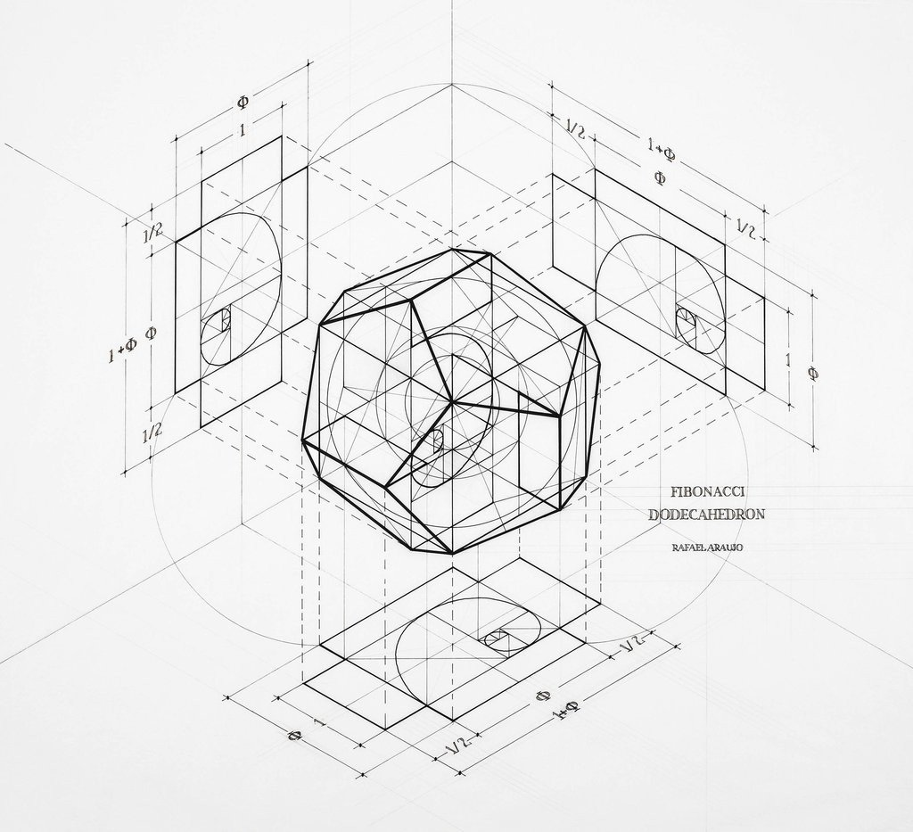

Моделирование — метод познания окружающего мира, который можно отнести к общенаучным методам, применяемым как на эмпирическом, так и на теоретическом уровне познания. При построении и исследовании модели могут применяться практически все остальные методы познания.
Под моделью (от лат. modulus — мера, образец, норма) понимают такой материальный или мысленно представляемый объект, который в процессе познания (изучения) замещает объект-оригинал, сохраняя некоторые важные для данного исследования типичные его черты. Процесс построения и использования модели называется моделированием.
В системном анализе моделирование рассматривается как основной метод научного познания, связанный с совершенствованием способов получения и фиксации информации об изучаемых объектах, а также с приобретением новых знаний на основе модельных экспериментов. Сегодня большинство моделей разрабатывается с использованием компьютерной техники и компьютерных технологий, такие модели разрабатываться с помощью программ или сами могут выступать в качестве программы.
При построении модели исследователь всегда исходит из поставленных целей, учитывает только наиболее существенные для их достижения факторы. Поэтому любая модель нетождественна объекту-оригиналу и, следовательно, неполна, поскольку при ее построении исследователь учитывал лишь важнейшие с его точки зрения факторы.
Самым важным и наиболее распространенным предназначением моделей является их применение при изучении и прогнозировании поведения сложных процессов и явлений. Следует учитывать, что некоторые объекты и явления вообще не могут быть изучены непосредственным образом. Другое, не менее важное, предназначение моделей состоит в том, что с их помощью выявляются наиболее существенные факторы, формирующие те или иные свойства объекта, поскольку сама модель отражает лишь некоторые основные характеристики исходного объекта, учет которых необходим при исследовании того или иного процесса или явления. Модель позволяет научиться правильно управлять объектом путем апробирования различных вариантов управления. Использовать для этого реальный объект часто бывает рискованно или просто невозможно. Если свойства объекта с течением времени меняются, то особое значение приобретает задача прогнозирования состояний такого объекта под действием различных факторов.
Цель моделирования диктует, какие стороны оригинала должны быть отражены в модели. Различным целям соответствуют разные модели одного и того же объекта.
Модели могут строиться средствами мышления (абстрактные модели) либо средствами материального мира (реальные модели). Особое место среди абстрактных моделей занимают языковые модели. Неоднозначность, расплывчатость естественного языка, столь полезная во многих случаях, может мешать в некоторых видах практики. Тогда создаются более точные (профессиональные) языки, целая иерархия языков, все более и более точных, завершающаяся идеально формализованным языком математики.
Процесс построения любой математической модели можно представить последовательностью этапов: